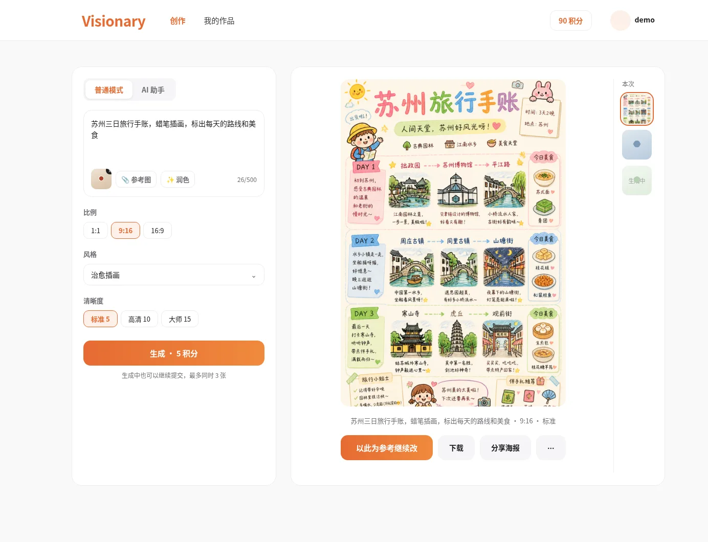
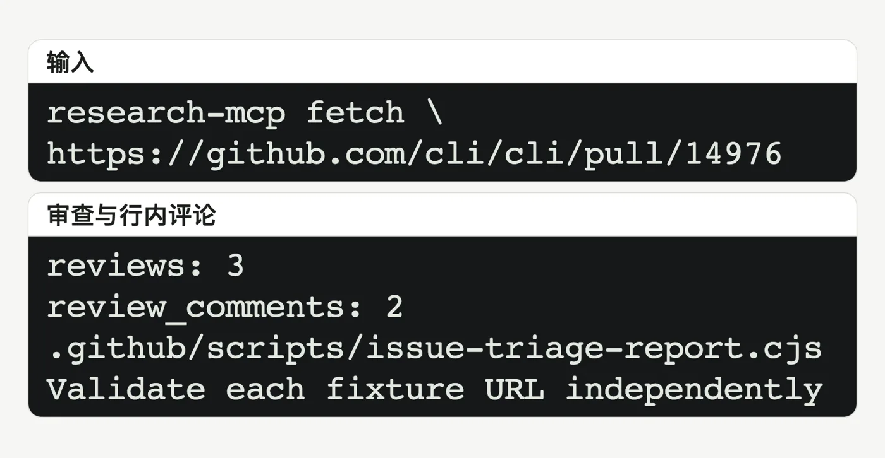
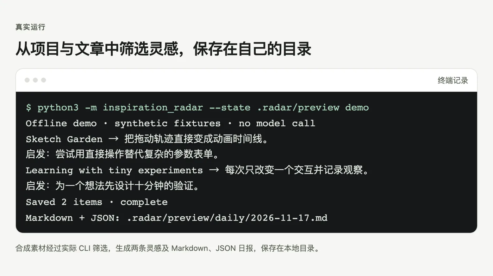

01
作品
全部开源，从需求到上线都是我主导完成应用 · macOS · Swift · 已发布 0.6.0
StylePolish 润色
在任意输入框里停笔，它给出润色建议，保留你的口吻。按 Tab 采用，发不发送仍由你决定。
- 先学你自己的写法，再按你的口吻改
- 常写错的词本地记住，不用每次调模型
- 支持哪些 App 可以在设置里开关
和同事的聊天
方案你看了吗？有什么意见直接说。
润色建议 · 保留你的语气
Tab 采用Esc 保留原文
点一句，或者自己打字。演示只内置了几句，真实 App 调用模型。
应用 · React + FastAPI · 三个入口
Visionary 生图工作台
网页、AI 助手和 MCP 三个入口共用一份积分。参考图继续改、作品历史、管理后台都有；Agent 拿个人 Token 就能直接生成。
- 三个入口一套账户和积分
- 由两个旧项目合并重写而来

MCP · Python · 5 个来源
research-mcp
让 AI 帮你查资料时，不只给一堆链接，而是把原文读回来。一次搜 GitHub、Hacker News、B 站、掘金和全网。
- 能读 B 站视频的文字稿
- 能读 GitHub 上别人给代码提的修改意见（PR 评审）
- 命令行和 MCP 两种用法


还有这些
mac-doctor-mcp让 AI 检查 Mac 内存和存储，给清理计划；你确认才执行，可回滚MCP→
knowledge-mcpMarkdown + Git 的个人知识库，搜索定位到行，写入前预览 diffMCP→
footage-mcp给 AI 做视频找免费素材，先抽帧看内容再下载，记录授权MCP→
repo-tutor把陌生代码库变成新人课程，每段讲解带源码出处Agent→
inspiration-radar每天从 GitHub 和文章里筛灵感，核验证据后永久去重Agent→
精卫 jingwei终端里的通用 Agent，两层本地记忆，每次会话后复盘攒规则Agent→
agent-skills日常开发反复用的 13 个技能：提交前复核、写 Issue、任务交接技能→
readme-from-code读代码写 README，命令实际跑过，每句都能回到代码验证技能→
知了 StudyBuddy孩子知道第一步做什么，家长在微信日报里看见学了什么应用→
02